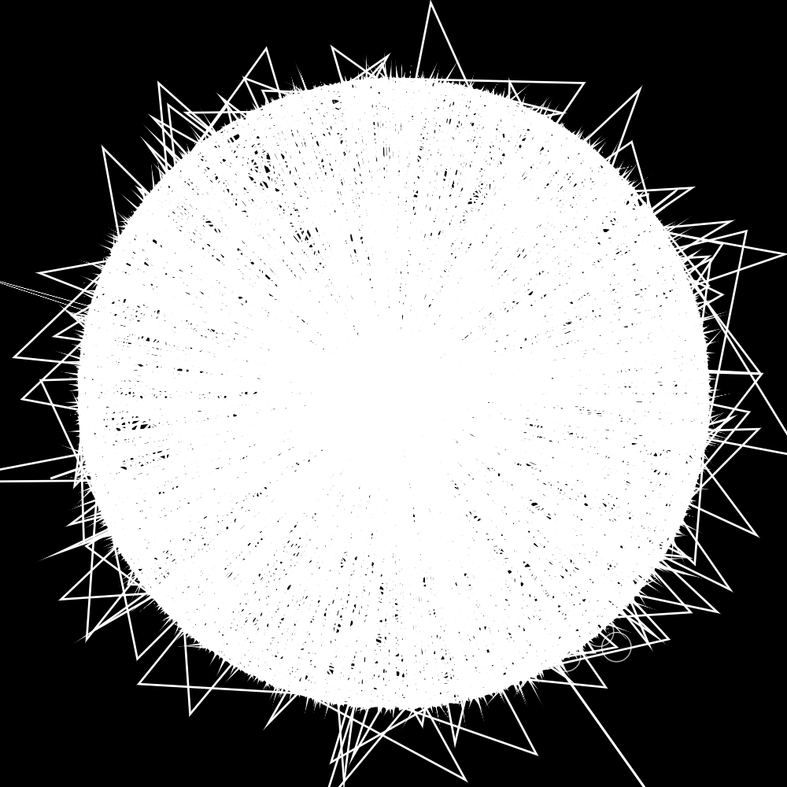
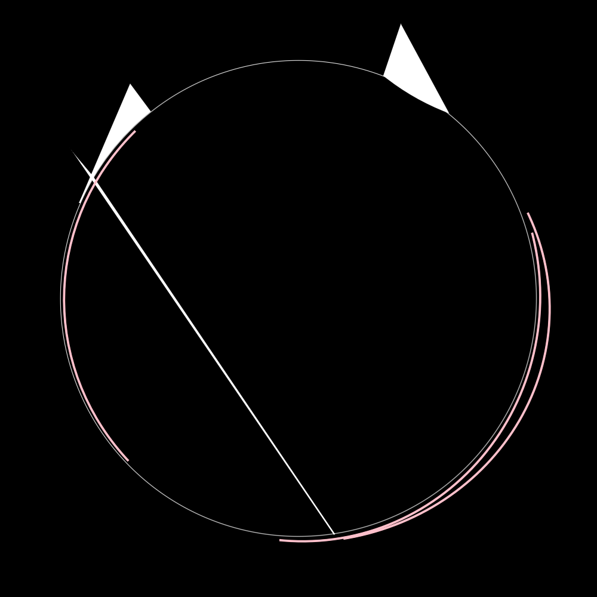
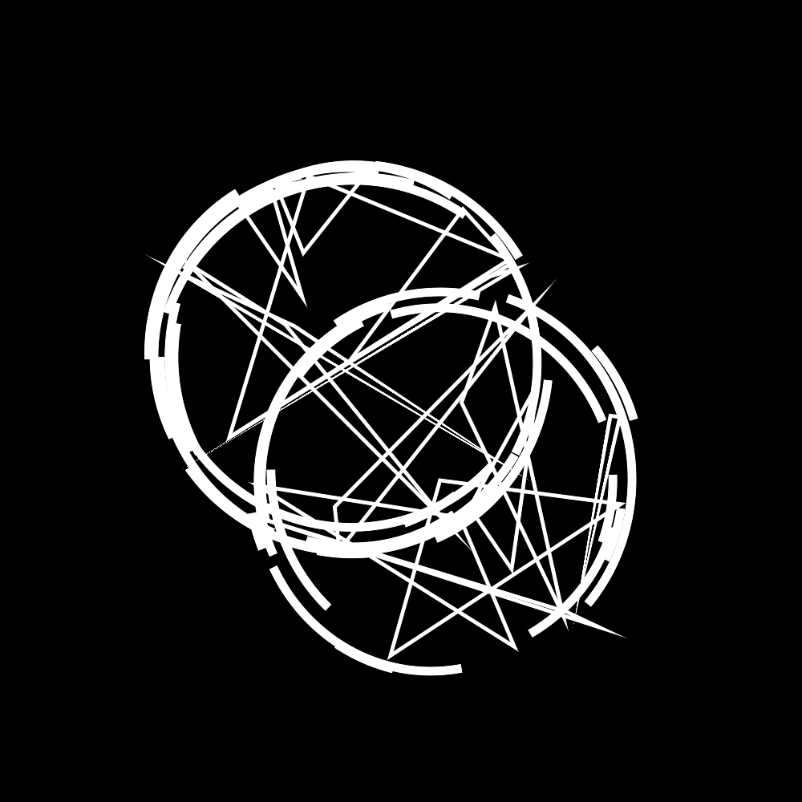
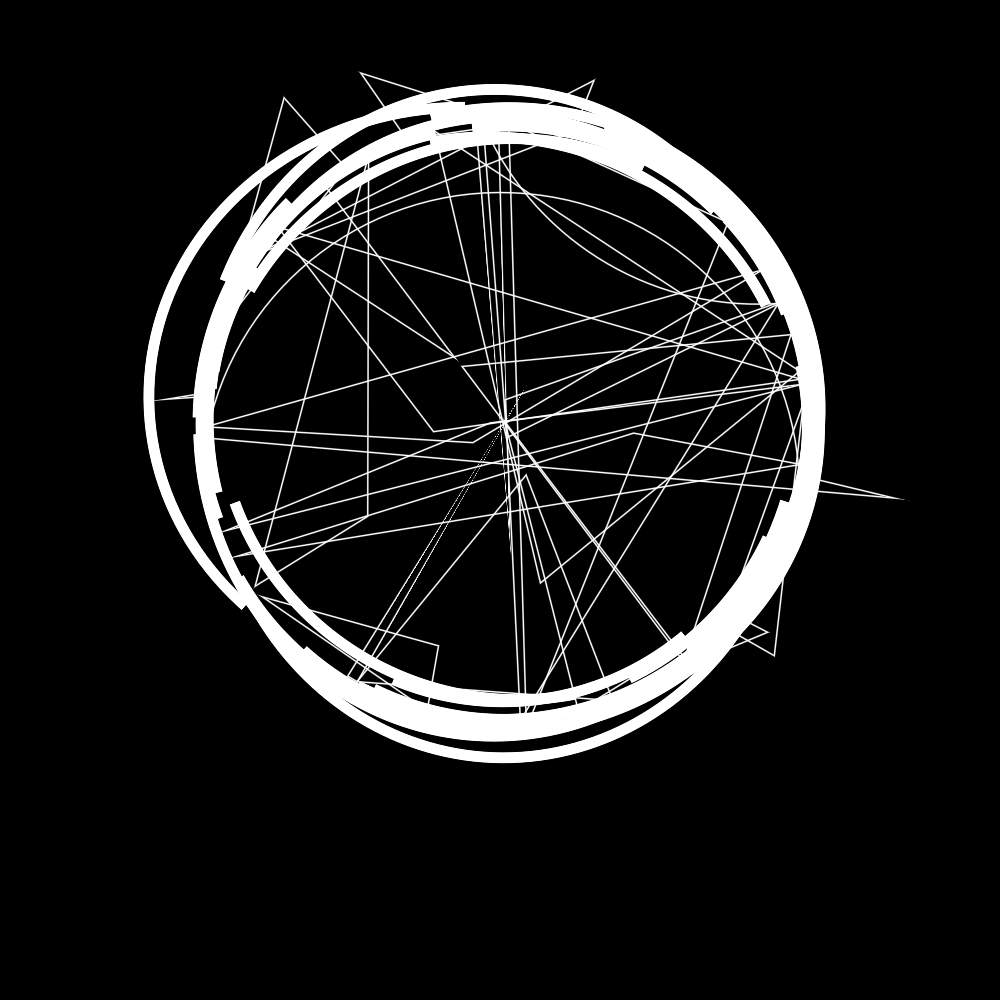
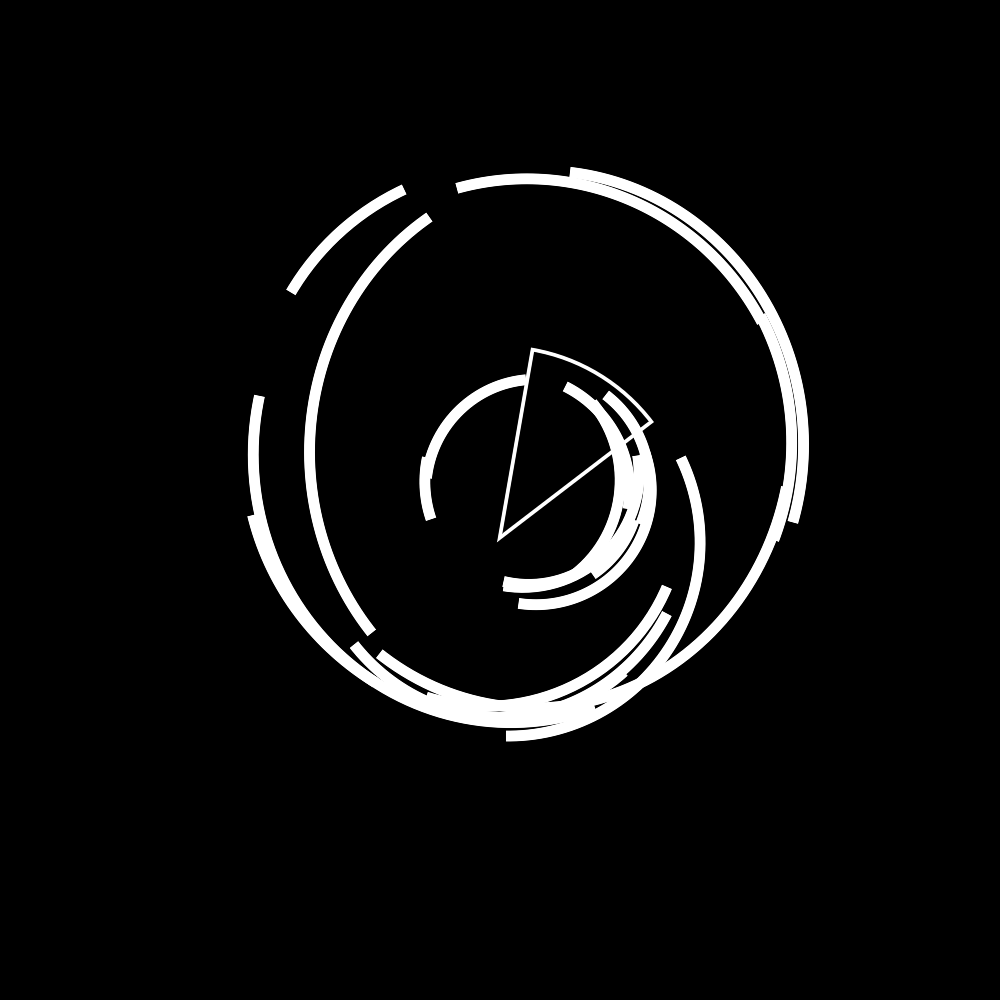
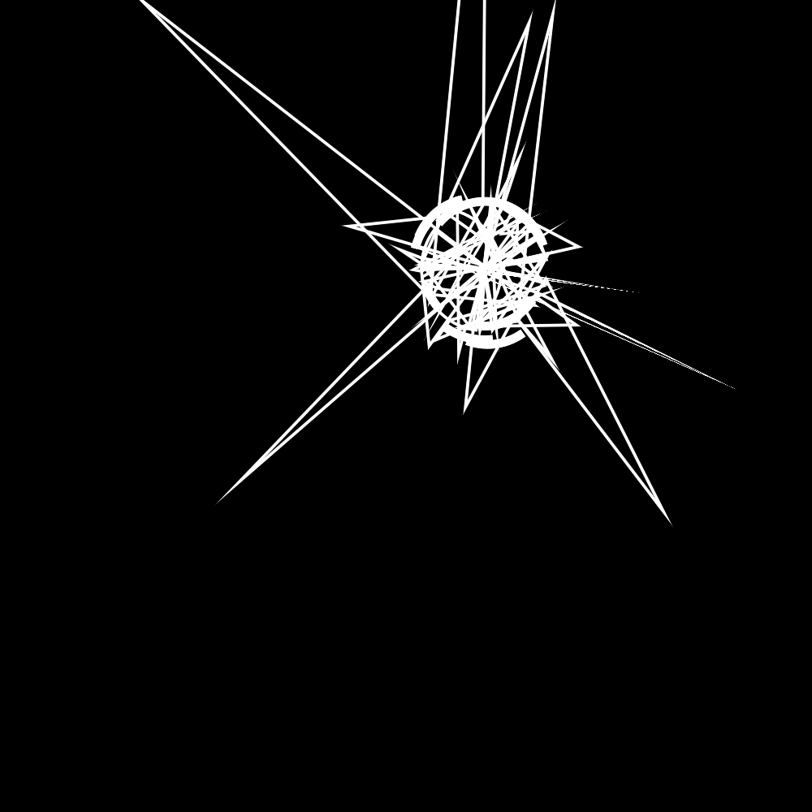
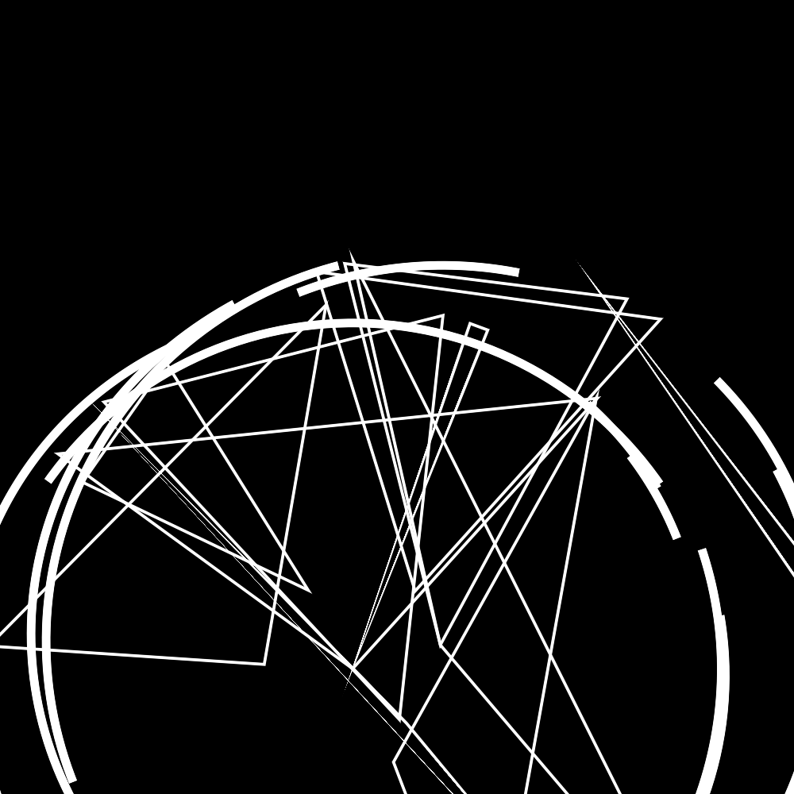
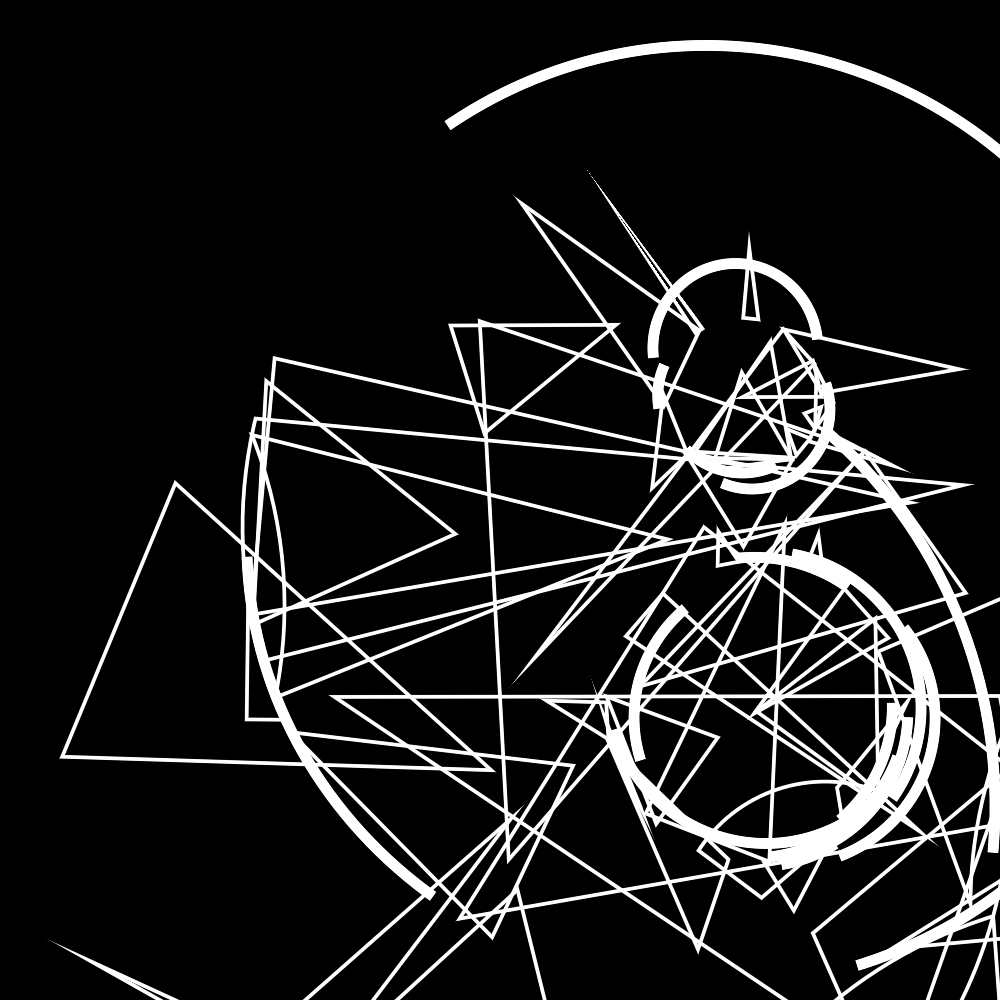
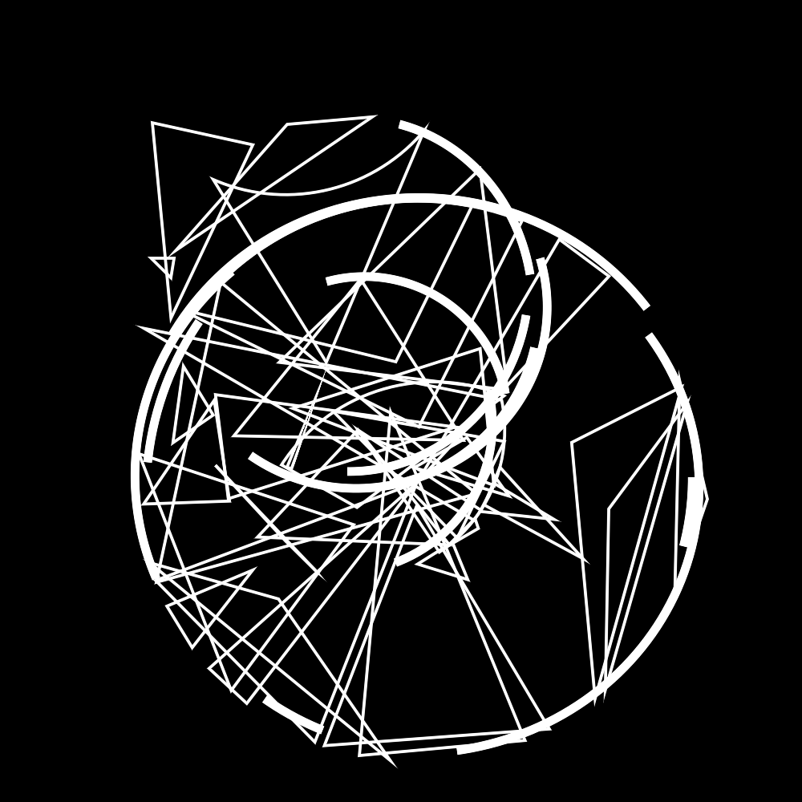
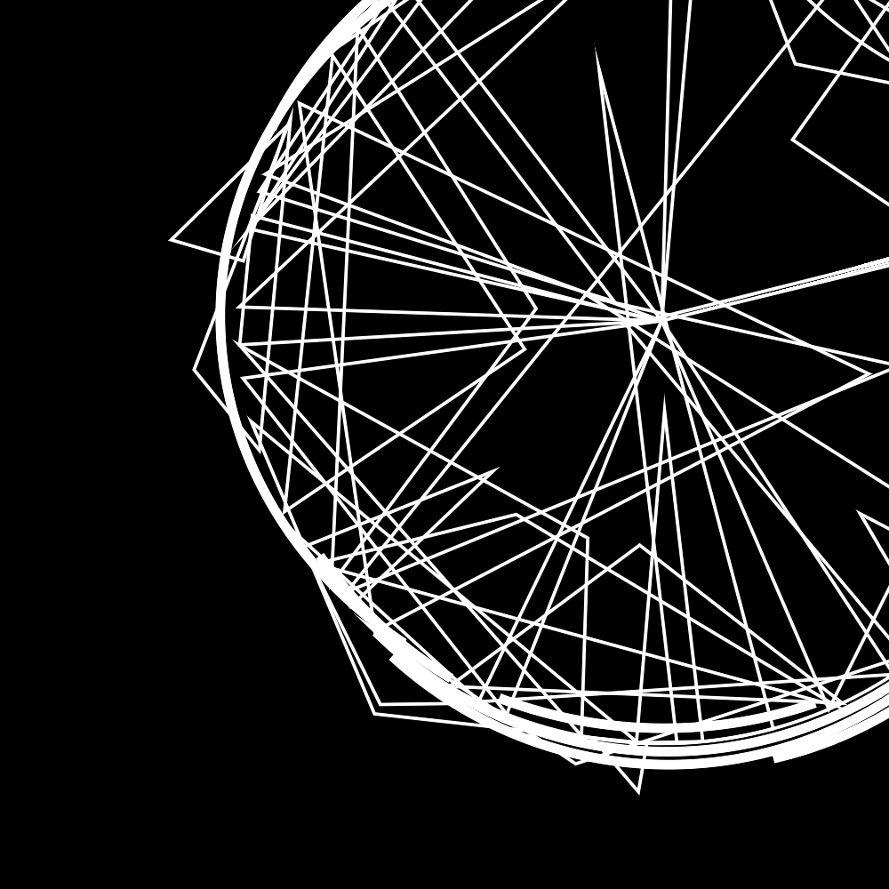

R01_CirclesAndTriangles
R01_CirclesAndTriangles
Circles And Triangles is part of the Random Series. The goal was to get acquainted with drawing contours in OpenRNDR. These pieces have a limited pallete of a background color (black) and a foreground color (white)
Algorithm
- Randomly decided on the number of circles, arcs on those circles, and triangles which will be drawn inscribed into those circles.
- Generate
N circles with different center points and radii - For each iteration of the algorithm:
- Until all of the triangles are used up
- Choose 2 random points on the circle
- Choose a 3rd point at the center of the circle, outside the circle, or inside the circle whose angle within that circle lies between the previous 2 points
- Draw a triangle, with some chance of creating an arc between the first 2 points at the radius of the circle.
- Until all arcs are used up
- Create an arc between two random points on the circle with
- A chance at slightly altered bezier curves
- A chance at a different radius (Gaussian distribution)
- Draw it and take a screenshot
Progression
Started out with just flat 1 px lines
|  |  | |
|---|
|  |  |
Starting to play with circle size
Arcs and Weight
Multiple Circles
| |
|---|
|  |  |
|  |
|  |  |
 |  |
|  |  |
|  | |
Future Work
I will probably leave this one here for now, but I am interested in:
- being able to autogenerate from the commandline from various seeds
- Adding more color to the drawings, even if it is just random different 2 done palletes
I will return to this concept for sure